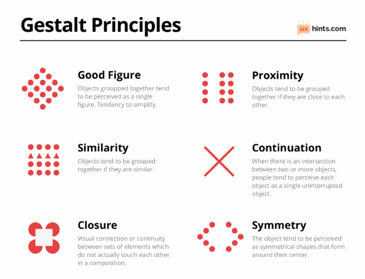

Graphic Design with the 1960s • Lesson 4
COMMUNICATION THROUGH SHAPES
Pictographs — Shapes That Speak Without Words
🤔 BIG QUESTION: How can simple shapes communicate a message without using any words?
1 class period
2 Pictographs
Canva
PNG + Reflection
✅ Communicate a message or idea using only shapes — no words needed
Today you'll learn about 3 big ideas:
🪨
Pictographs
Pictures that represent words — from cave art to modern icons
🧠
Gestalt Principles
Rules for how our eyes group shapes into meaning
💬
Visual Communication
Using shapes to send a clear message without text
These are rules for how our eyes make sense of shapes. Use at least one in your pictograph!

1. Similarity
We group things that look alike (same color, shape, or size)
2. Continuation
Our eyes follow the smoothest path or line
3. Closure
Our brain fills in missing parts to see a whole shape
4. Proximity
Things placed close together look like they belong together
5. Figure/Ground
We separate a shape (figure) from its background
6. Symmetry & Order
Our brain prefers balanced, simple arrangements
Watch this video about pictographs, Gestalt principles, and how to create your own in Canva:
Create 2 pictographs in Canva! Each design MUST include:
🔵
At Least 1 Shape
Circles, squares, triangles, etc.
🧠
1 Gestalt Principle
Use at least one principle per design
💬
Clear Message
Each pictograph represents a word, idea, or action
🚫
No Words
Your shapes do the talking — no text on the design!
💡 Stuck? Think about signs you see every day — crosswalks, Wi-Fi, recycling. What shapes make them recognizable? Start there!
🚫 NO text or letters on your pictograph • Shapes ONLY • Export as PNG
⭐ LEVEL UP: Design a pictograph for someone who is visually impaired or hearing impaired — how would you make your message accessible using shapes, size, and contrast?
1. Click Share (top right in Canva)
2. Click Download
3. Change file type to PNG
4. Click Download and save to your device
💥 POW! SUBMIT YOUR WORK! 💥
1. Click Start Assignment on this page
2. Upload your PNG file
3. Answer the reflection question in the Comments box
💬 REFLECTION: Which Gestalt principle did you use, and how does it help someone understand your pictograph without words?
"I used the Gestalt principle of ______ because it helps the viewer ______."
WORD BANK:
similarity • continuation • closure • proximity • figure/ground • symmetry • group shapes • fill in missing parts • follow a path • see the message
✅ Comunicar un mensaje o idea usando solo figuras — sin necesidad de palabras
Hoy aprenderás sobre 3 grandes ideas:
🪨
Pictografías
Dibujos que representan palabras — desde el arte rupestre hasta los íconos modernos
🧠
Principios Gestalt
Reglas sobre cómo nuestros ojos agrupan figuras para darles significado
💬
Comunicación Visual
Usar figuras para enviar un mensaje claro sin texto
Estas son reglas sobre cómo nuestros ojos interpretan las figuras. ¡Usa al menos uno en tu pictografía!
1. Similitud
Agrupamos cosas que se ven parecidas (mismo color, forma o tamaño)
2. Continuación
Nuestros ojos siguen el camino más suave o la línea
3. Cierre
Nuestro cerebro completa las partes que faltan para ver una figura completa
4. Proximidad
Las cosas que están cerca se ven como si pertenecieran juntas
5. Figura/Fondo
Separamos una figura de su fondo
6. Simetría y Orden
Nuestro cerebro prefiere arreglos equilibrados y simples
Mira este video sobre pictografías, principios Gestalt y cómo crear las tuyas en Canva:
¡Crea 2 pictografías en Canva! Cada diseño DEBE incluir:
🔵
Al Menos 1 Figura
Círculos, cuadrados, triángulos, etc.
🧠
1 Principio Gestalt
Usa al menos un principio por diseño
💬
Mensaje Claro
Cada pictografía representa una palabra, idea o acción
🚫
Sin Palabras
¡Tus figuras hablan solas — sin texto en el diseño!
💡 ¿No sabes qué hacer? Piensa en los letreros que ves todos los días — cruces peatonales, Wi-Fi, reciclaje. ¿Qué figuras los hacen reconocibles? ¡Empieza por ahí!
🚫 SIN texto ni letras en tu pictografía • SOLO figuras • Exportar como PNG
⭐ SUBE DE NIVEL: Diseña una pictografía para alguien con discapacidad visual o auditiva — ¿cómo harías tu mensaje accesible usando figuras, tamaño y contraste?
1. Haz clic en Share (arriba a la derecha en Canva)
2. Haz clic en Download
3. Cambia el tipo de archivo a PNG
4. Haz clic en Download y guarda en tu dispositivo
💥 ¡ZAS! ¡ENVÍA TU TRABAJO! 💥
1. Haz clic en Start Assignment en esta página
2. Sube tu archivo PNG
3. Responde en inglés en la caja de Comments
💬 REFLECTION: Which Gestalt principle did you use, and how does it help someone understand your pictograph without words?
(¿Qué principio Gestalt usaste y cómo ayuda a alguien a entender tu pictografía sin palabras?)
"I used the Gestalt principle of ______ because it helps the viewer ______."
WORD BANK / BANCO DE PALABRAS:
similarity (similitud) • continuation (continuación) • closure (cierre) • proximity (proximidad) • figure/ground (figura/fondo) • symmetry (simetría) • group shapes (agrupar figuras) • fill in missing parts (completar las partes que faltan) • follow a path (seguir un camino) • see the message (ver el mensaje)